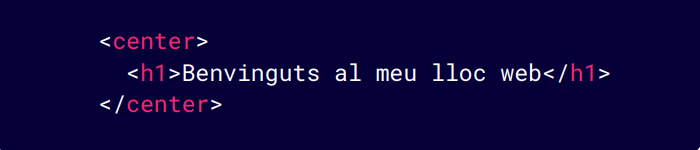
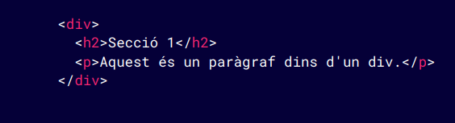
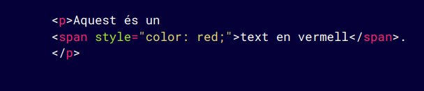
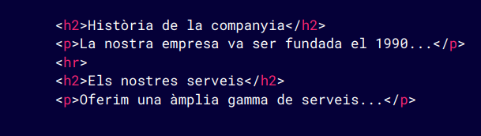
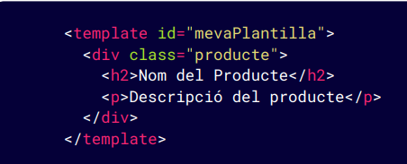
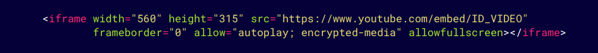

<CENTER>Obsoleta: Antiguamente utilizada para centrar contenido (texto, imágenes).
Importante: Está completamente obsoleta en HTML5; su uso debe evitarse en favor de CSS para la alineación

<DIV>Contenedor de Bloque: Es una etiqueta sin significado semántico que crea divisiones o contenedores de nivel de bloque (ocupan todo el ancho disponible y comienzan en una nueva línea). Se usa para agrupar elementos (texto, imágenes, otras etiquetas) y aplicarles estilos con CSS.
Importante: Un error común es su uso excesivo ("divitis"); siempre que sea posible, se deben preferir etiquetas semánticas (<header>, <section>, <article>) y reservar <div> solo para agrupaciones lógicas/visuales cuando no exista una alternativa semántica mejor.

<span>Contenedor en Línea: Etiqueta no semántica que funciona "inline" (solo ocupa el espacio necesario, no fuerza un salto de línea). Sirve para estilizar o manipular pequeñas porciones de texto o contenido específico dentro de un bloque.
Importante: Su uso es adecuado para estilos en línea (combinado con CSS), pero se debe evitar abusar de ella para crear contenedores innecesarios.

<hr>Línea Horizontal: En HTML5, ha dejado de ser puramente decorativa y tiene un valor semántico: indica un cambio de tema o una ruptura (break) en el flujo del documento, ayudando a motores de búsqueda y herramientas de accesibilidad.
Importante: No debe usarse solo para fines visuales (en ese caso, usar CSS); debe emplearse cuando es semánticamente necesario separar secciones, aunque su apariencia final (como la línea por defecto) puede y debe estilizarse con CSS.

<template>Define fragmentos de HTML que no se muestran (renderizan) inmediatamente al cargar la página. El contenido queda inactivo hasta que se manipula explícitamente con JavaScript.
Importante: Es ideal para estructuras HTML preparadas (como listas o tarjetas de productos) que se clonarán e insertarán en el DOM (Document Object Model) en tiempo real, proporcionando gran flexibilidad a las aplicaciones dinámicas. Las plantillas deben ser simples y modulares, y no deben incluir contenido activo (scripts) en su interior, ya que este solo se ejecutará una vez que la plantilla se añada al DOM.

<iframe>Inline Frame: Permite incrustar una página HTML (como vídeos de YouTube, Google Maps o servicios externos) dentro de la página principal de forma moderna y segura. Se personaliza con atributos como width, height, src (ruta del contenido) y frameborder
Importante
